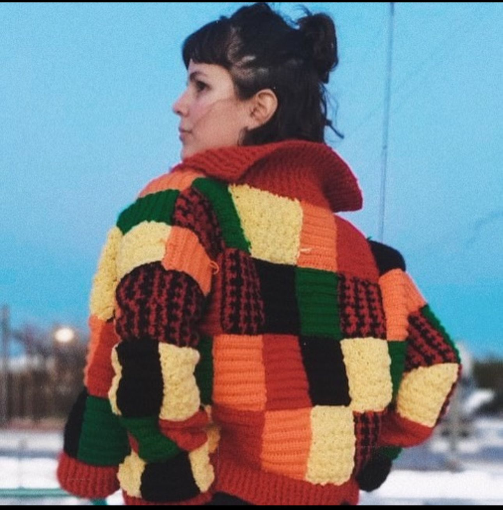
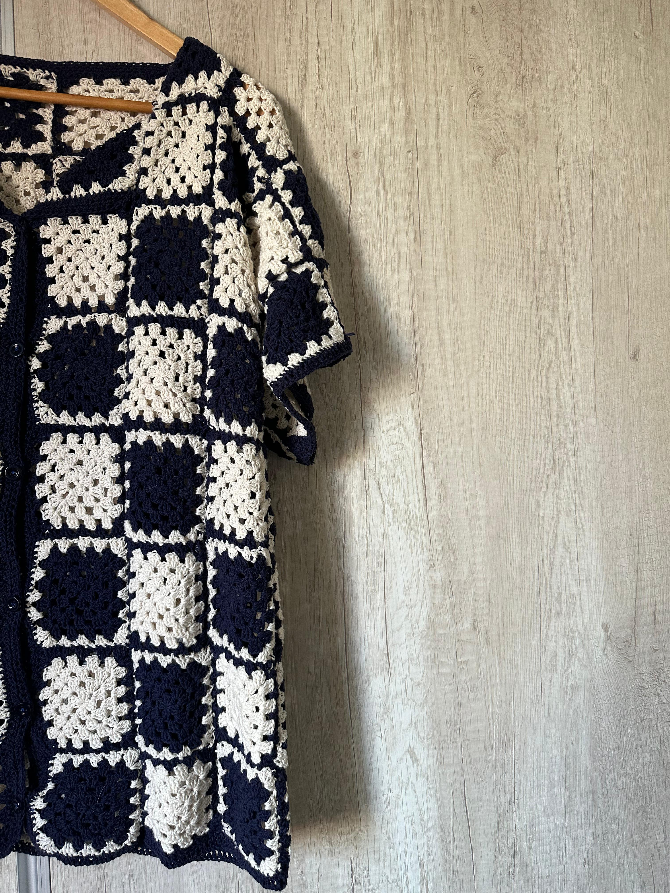
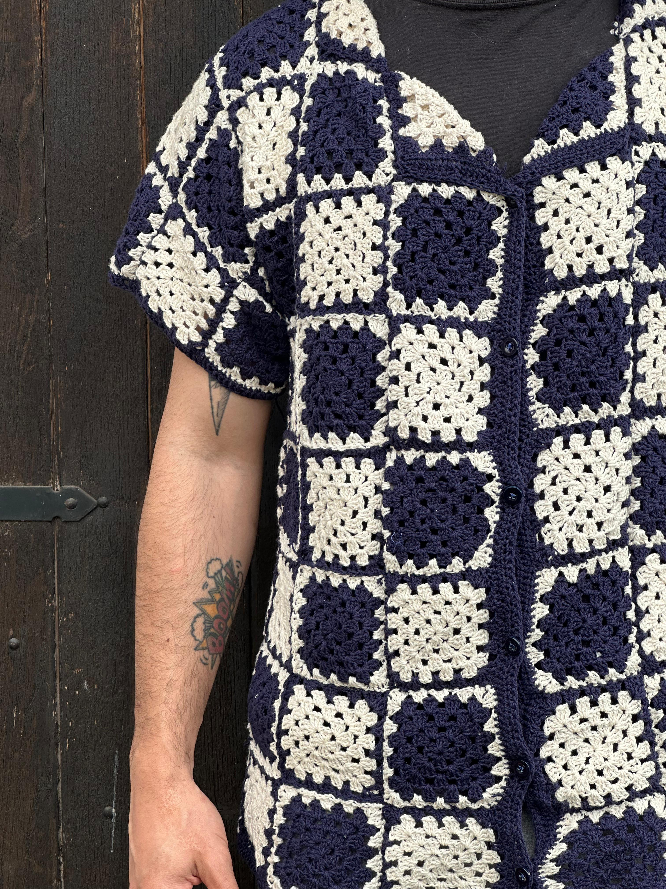

En Penelope, la pasión por el crochet se entrelaza con la historia y la creatividad. Somos Miriam y Carola, madre e hija de la localidad de Fitmat, dedicadas a crear indumentaria única y llena de amor. Inspiradas en la mitología de Penélope, quien tejía y desteía con paciencia y sabiduría, cada una de nuestras piezas cuenta una historia y está hecha a mano con esmero.
En nuestra colección encontrarás desde suéteres y bufandas hasta accesorios que resaltan la calidez del crochet y la elegancia atemporal. Creemos en la belleza de lo artesanal y en la importancia de cada puntada, que refleja el cariño y la dedicación que ponemos en cada creación.
Te invitamos a explorar nuestro mundo de hilos y colores, donde cada prenda es un abrazo tejido.
Bienvenidos a nuestra tienda!
¬°Descubre la magia del crochet! üåü Visita nuestra tienda y encuentra piezas √∫nicas dise√±adas con amor. No te pierdas nuestras colecciones exclusivas. ¬°Compra ahora y dale un toque especial a tu estilo!



Nosotras
Preventa

No te quedes sin el tuyo!
Consegui el tuyo 